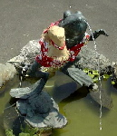
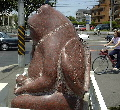
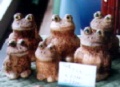
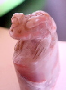
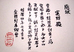

ケグリ同志、成功撮影！ＪＲ横浜線２駅カエル画像！ 【横浜発=ケグリ同志記者】「かえる新聞」平成13年6月30日号で紹介された特ダネ「ＪＲ横浜線２駅にカエル像！」のスクープ記者！kerochi-kuraさんに場所をお伺いして、早速行って来ました！長津田駅前のものはリアル系で、口から勢いよく水を吹き出しているのが、なごめます！また、十日市場駅前はキャラクター系で、賽銭箱もある「神様」として祭られていて、手に縁起ものの「蓮の蕾」。背には「背の葉」が見えます。
 【全国かえる奉賛会】航空機と激しい競争を展開しているＪＲは、この２体のカエル像で、航空各社に決定的な打撃を与えることであろう！なにしろ、※遠方から新幹線でお越しの方は、「横浜市内」行きの乗車券でここまで来られるというのであるー。
さー、全国の新幹線沿線のカエラー諸君！この夏休みは、映画のセットで稼ぎまくるハリウッド大阪映画村や、ジャングル大帝をぱくった作品でぼろもうけしている米国江戸村に行く計画をただちに中止して、いますぐ新幹線の横浜行き切符を手に入れようではないかああああ。
 津和野に竹の皮製のカエル人形！【山口発=ニャタロウ様】山口県の津和野に行きました。今年もカジカが見れるかと思いましたが駄目でした。そのかわり売店に、竹の皮でできたカエル人形がありました。大７３０円で小５７０円です。臺灣でカエル大王印を刻印！ 【中華民國臺灣省發=げこげこ大王直筆】全国かえる奉賛会のみなさん！喜んでくれい！大王は、このほど臺灣を旅行して、そこでカエル印鑑を作ってもらったのであるー。宿舎の近くに印刻店を発見した大王は、さっそく店主に曰く「ここにカエルの印鑑ありますか？」「はー？絵に書いて」カエルの絵を書く大王。
「あああー蛙ね！あるよ。たったひとつだけ」
 でもでも、こんなに不細工な蛙印鑑って、きょう、ここで、たったいま、俺が買わないと、もう、ずううううっと誰も買ってくれないだろうな。誰が彫ったか知らないけど「ああーどーしてまた、こんな蛙彫ったんだろう」って後悔されるのも、この不細工蛙が可哀想ではないか！「ください！これ」「文字はどうしますか？」「蛙大王七世」と入れてね！
蓮カエル同志に初印使用でカエル感状！店の人は、終始爆笑しながら、一生懸命に彫ってくれ、翌日の夕方、無事に受け取ることができました。そして、この印を使用して、はじめての感状を、このところ、大王とともに携帯向け「かえる新聞」コンテンツ充実に尽力してくれている蓮カエル同志に、公印付きの感状を授与することにしたのであります！蓮カエル同志！受け取ってねー。
外国でバカ受け！カエル展３シャツ！
 【福岡かえる展３実行委員会】福岡に来たいけど来れないカエラーのために、カエル展気分を味わえる、スタッフ専用Ｔシャツを特別販売してますが、残りはＳサイズばかりになりました！
【福岡かえる展３実行委員会】福岡に来たいけど来れないカエラーのために、カエル展気分を味わえる、スタッフ専用Ｔシャツを特別販売してますが、残りはＳサイズばかりになりました！カワノナミさん作のイラストを使ったポスターをそのまま大胆にプリントしました。かなりインパクトある 価格は会場価格よりも割安な２０００円（送料別）で、おわけします。。サイズはＳが３枚だけです。大王は海外に着ていったら、もーバカ受けでした。 カエルの母みち子さん情報求む！【かえる掲示板発=コバ様】カエルの母みち子さんを捜しています。はじめまして。ソウルのテレビ番組製作会社でアルバイトしているコバです。実は今回、番組を製作するためにさまざまなびっくりさんを捜しているうちに、｢静岡県にカエル３５匹と暮らすカエルの母みち子さんがいる」という情報をキャッチしました。詳しい情報を確認してできれば取材にお伺いしたいのですがどなたかご存知ありませんか？娘が目覚めたカエル世界万歳！【東京発=越智様】前略 突然、失礼いたします。小学校に通う娘がカエルに目覚め、あれこれ検索し覗いておりました。※先日はスーパーの帰りに雨蛙を見つけて喜んでおりました。娘が最近描いたカエルのイラストを掲載したページに皆様のＵＲＬを記載させて頂きましたので、お知らせいたします。
【全国かえる奉賛会】突然の目覚めは、非常に縁起がよろしい！娘さんは、きっと父を救う福の神になると思います。これからも、カエル漫画をどんどん描いてくれ！アドレスを固定してくれたら、かえる新聞専属４コマ漫画担当として、毎週紹介するぞおおおおおお！
投稿採用者に武功カエル徽章を授与！ |
||||||||||||||||||||||||||||||
かえる古新聞過去に取り上げた記事を見出し付きで一覧したい人は、ここをクリック◆創刊号を見る◆先週号を見る◆話題の号を見る◆かえる新聞の昔を読む◆COOL NET FROG RANKING !
|
私も入っています。。全国かえる奉賛会
大王様に会うには、このバナーをクリック。ずっと奥に写真館があるぞ。全国かえる奉賛会に入会するには、自分のホームページのどこかに、下の部分を追加するとバナーがリンク付きで表示されるぞ。どんどん入会しましょー |


|